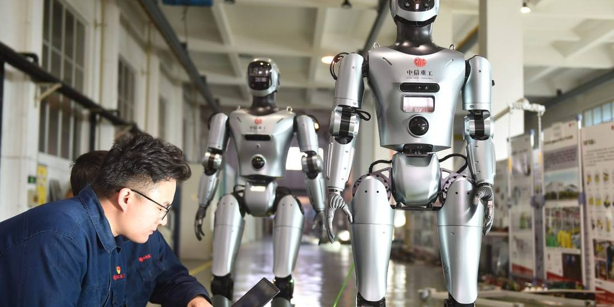

OpenAI Disbands Its Robotics Team as General Models Take Over the Work
This is not OpenAI abandoning robotics; it is the judgment that general models are already good enough. Whether that judgment holds, one simulation benchmark cannot say. The real test comes on the day of the humanoid demo, when the model's hands are finally on show.

- 01THE DECISION — The stand-alone robotics team is disbanded; researchers join the main research organization, and applied robotics and hardware work moves to the applications organization.
- 02THE REASON — General frontier models can be used on robots directly; building a dedicated robotics brain in a separate team is no longer the fastest path.
- 03THE PROOF — On simulation benchmarks, general models beat specialist robotics models. The tests cover only the simplest pick-and-place tasks, on a single benchmark.
WHAT HAPPENEDWhat Happened
The destinations are now clear. Robotics researchers are moving into the main research organization led by Chief Research Officer Mark Chen, while applied robotics and hardware work goes to the applications organization led by President Greg Brockman. OpenAI has not disclosed how many people are affected, and it has published no blog post explaining the change.
NVIDIA's October 14 study is the public evidence behind the move. Agents driven by Astra completed simulated pick-and-place tasks on RoboLab-120 with no robotics-specific training. The research team stressed that this was simulation, not real robots, and that pick-and-place is the simplest manipulation task.
Cost and speed are another barrier. Token spend and call latency are still at laboratory levels, far from production-line tempo. OpenAI is betting that model capability keeps climbing and the next generation of models will close these gaps on its own.
WHAT TO WATCHOne Simulation Cannot Carry a Change of Direction
RoboLab-120 tests only pick-and-place, a single benchmark. Pick-and-place is the simplest manipulation task; real-world robots face far more than that. Treating one simulation benchmark as evidence for a change of direction is a long step.
Two things come next. First, whether general models can reproduce their simulation results on real robots. Second, whether cost and speed can fall to usable levels. Until both have answers, the decision to disband the team remains in its validation phase.
WHY IT MATTERSSix Years, Twice: OpenAI's Patience With Robotics Runs Short
The first robotics effort wound down in 2020-2021; the team was rebuilt in 2024 and worked with Figure. Two disbandings in six years show that OpenAI's patience with the robotics route has always been limited: when model capability shifts, the organization shifts with it.
The humanoid demo is still set for 2027, and that date has not moved. In the week of the reorganization, the company's booth 208 at the CoRL conference in Austin stood empty: the people were there, the booth was not. Whether the demo lands on time will be the most direct test of this reorganization.
THE SHIFTWhat Changed
SIGNAL JUDGMENT — ANALYSISThe Team Is Gone; the Bet Is on General Models
Tokenta Signal's judgment: folding the robotics team into the main research organization follows a direct logic. If GPT-6 Astra can handle pick-and-place in simulation without dedicated training, a separate team is duplicated effort. But one simulation benchmark cannot carry a change of direction: the 74.8% figure comes from NVIDIA's simulation study, not real robots. Cost and speed are equally unresolved, at roughly $36.40 per attempt and about 18.56 seconds per model call. Hands like these are still far from the factory floor.
WHAT REMAINS UNCERTAINWhat Remains Uncertain
EVIDENCEEvidence
Fortune's exclusive of November 13: OpenAI disbands its stand-alone robotics team. Reported by Wen Shao; researchers move into the main research organization, and applied robotics work goes to the applications organization.
PRIMARY SOURCESPrimary Sources
- Fortune: OpenAI disbands robotics team as its general models start running robots
https://fortune.com/2026/11/13/openai-disbands-robotics-team-as-its-general-models-start-running-robots/ - Pivot News: OpenAI folds its stand-alone robotics team into wider research groups
https://pivotnews.ai/five/openai-folds-its-stand-alone-robotics-team-into-wider
RELATEDRelated Intelligence
- OpenAI's Performance Factory Lets Codex Agents Hunt ChatGPT Slowdowns
- Tesla Opens Cybercab Orders at $29,990, but the Car Won't Move Without a $299 Monthly Subscription
- OpenAI Launches Daybreak Red Team and Defense Factory at Cyber Keynote
- Databricks Turns Genie Into an Always-On Autonomous AI Coworker